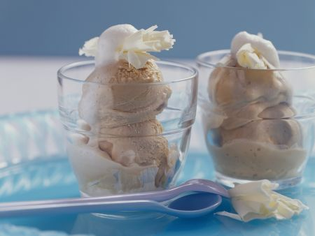

Honey Espresso Gelato

A creamy espresso gelato sweetened with honey and stabilized with carboxymethyl cellulose for smooth texture.
Yield: Approximately 600–700 g
Ingredients
- 220 g milk (whole milk recommended)
- 180 g whipping cream (35% M.F.)
- 100–120 g espresso or mocha coffee, very strong and fully cooled
- 100 g white sugar
- 30 g honey
- 2 g carboxymethyl cellulose (CMC)
- Pinch of salt (optional, enhances flavor)
Instructions
- Brew your espresso or mocha coffee, making sure it's dense and strong. Let it cool completely to room temperature.
- Pre-chill your ice cream maker:
- If using a compressor model, turn it on now to cool.
- If using a freezer bowl, ensure it’s been frozen overnight.
- In a small dry bowl, whisk together: 100 g sugar, 2 g CMC, and (optional) pinch of salt. This prevents clumping when added to liquids.
- In a large mixing bowl, combine 220 g cold milk, 180 g cold whipping cream, and 100–120 g cold espresso. Blend for a few seconds.
- Gradually add the dry mix into the liquid base while blending with a hand blender to fully disperse the stabilizer.
- Add 30 g honey and blend again briefly until fully incorporated.
- Chill the mixture in the fridge (covered) for 30–60 minutes to allow the stabilizer to hydrate and flavors to develop.
- Stir gently to remove surface foam, then pour into the ice cream maker with the paddle running.
- Churn for 30–40 minutes, or until the ice cream reaches a smooth, scoopable consistency.
- Serve immediately as soft-serve, or transfer to a container and freeze for a firmer texture. Let it rest 5–10 minutes at room temperature before scooping after deep freezing.
Notes
- CMC prevents ice crystals and improves shelf life.
- Honey helps keep texture soft and enhances flavor.
- Do not skip the hydration step—it’s critical for the stabilizer to work properly.
Tools
- Hand blender or immersion blender
- Ice cream maker (compressor or freezer bowl type)
- Digital scale for precision
- Refrigerator for chilling mix